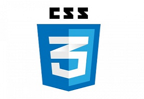
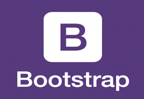

- 
- 

Mission Statement
As a dynamic technology professional with comprehensive experience in driving strategies for the provision of exceptional Technology Related Services, I offer an expertise acquired while working in private enterprise environments that is top notch. With “big picture” vision, “get it done” leadership skills and a focus on achieving overall organizational strategic goals as strengths, I would like to explore putting my extensive Web Development skills to all interesting opportunities that arise. Here are a list of some of the skills I bring to the table
- Proficiency in HTML, CSS, Javascript, and jQuery.
- Strong knowledge of Node.js for creating and deploying Web Apps.
- Working knowledge of setting up databases using SQL Server, and writing queries in SQL
- Solid experience using the R language for statistical programming as well as tools provided in R Studio.
- Long background using MATLAB for various tasks including Numerical Analysis, and Applied Linear Algebra.
- Familiarity with the programming languages C++, as well as Python.
Resume
WORK EXPERIENCE
Full Stack Developer, Jump Analytics, Vancouver, BC March – Sept. 2018
Bachelor of Science – Mathematics Major, Simon Fraser University, Burnaby, BC 2017
- Worked on a two man team to develop a web application for doing surveys and storing data from surveys in a database, hosted using Microsoft Azure.
- Began my work with Front-End Development of the HTML design for the survey form, as well as the CSS, and Javascript using the Bootstrap framework.
- Moved on to begin various Back-End Development for the web app using Node.js, involving Back-End Validation of data coming from the form, the routing of the various web pages, and rendering data from incomplete forms back to the user to finish the form.
- Worked with setting up the database using SQL Server as well as writing various SQL queries for pulling data from the database based on the given user for the web app.
- Managed the User Testing phase of the Web App giving detailed instructions for attempting to break the functionality of the survey form, and preventing SQL injection into our database.
- Handled the Quality Assurance of the Web App fixing the various errors and bugs that were reported to me.
- Was promoted to head of new project based around collecting daily information from stables about their horses.
- Managed and mentored a new intern on front end web development, as well as user testing.
- Worked within the Azure environment to set up Virtual Machine for deploying web app and hosting website.
- Worked independently, determining a process for review and analysis of papers on the field of Partial Differential Equations to gain a clear understanding of techniques used by authors.
- Generated new ideas and creative uses of material from paper working with my supervisor to extend methods used to other problems.
- Prepared written and verbal reports for Supervisor (an industry expert) using LaTeX identifying potential ways of applying these techniques for other Partial Differential Equations, contributing towards a potential paper.
Bachelor of Science – Mathematics Major, Simon Fraser University, Burnaby, BC 2017
- Courses Included: Computing with Calculus, Computer with Linear Algebra, Real Analysis, Probability Theory, Partial Differential Equations
- GPA: 3.47
- Courses Included: Mastering Data Analysis in Excel, Excel Skills for Business: Intermediate I & II, Managing Big Data with MySQL.